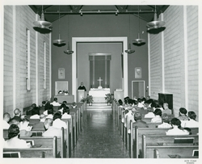
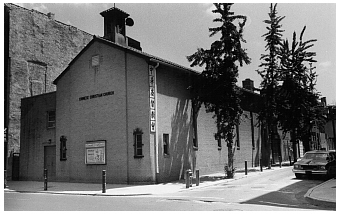
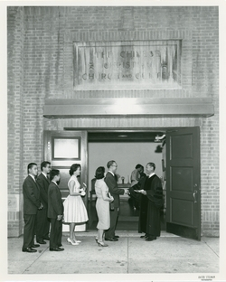

費城中華基督教會暨服務中心 - 粵語堂
教會歷史
1940年，美國華裔和中國留學生的屬靈需要明顯增加。1941年9月，五個宗派 (美國浸信會 (American Baptist Church)，美國聖公會 (Episcopal Church)，美國長老會 (Presbyterian Church (U.S.A.)，聯合基督教會 (United Church & Christ)（前歸正教教會）及循道會 (United Methodist Church) 聯合創辦了在1006禮士街的中華基督服務中心，聘請麥勤思女士為同工。
1946年秋，費城的華人教區工作正式和中心合併，而我們同時改名為費城中華基督教會暨服務中心。
1952年教會目前的新堂正式落成，在這以前，崇拜和聚會都在1006禮士街舉行。原先計劃建築一所與教會連接的服務中心，結果未能照計劃進行，預算建中心之地則改為遊樂場，并在1960及1972年將遊樂場擴建。
1985年初，教會正式成為財政獨立。1986年9月，教會分成兩堂崇拜（英語及粵語）。1986年11月，教會拓建計劃開始進行，其中包括興建新中心於教會旁邊，擴建禮堂，興建新遊樂場和裝修教會大樓。蒙神恩典，工程於1988年10月開始，并於1989年秋完竣。1995年普通話堂事工亦開始成立。
我們感謝大能的神所賜的祝福，和應許祂的忠心僕人，使他們的辛勞結出果子，亦為本會奠下穩固的根基。我們也感謝所有在各事工上有份的弟兄姊妹。我們亦展望將來為神的國度同心努力、興旺福音。


